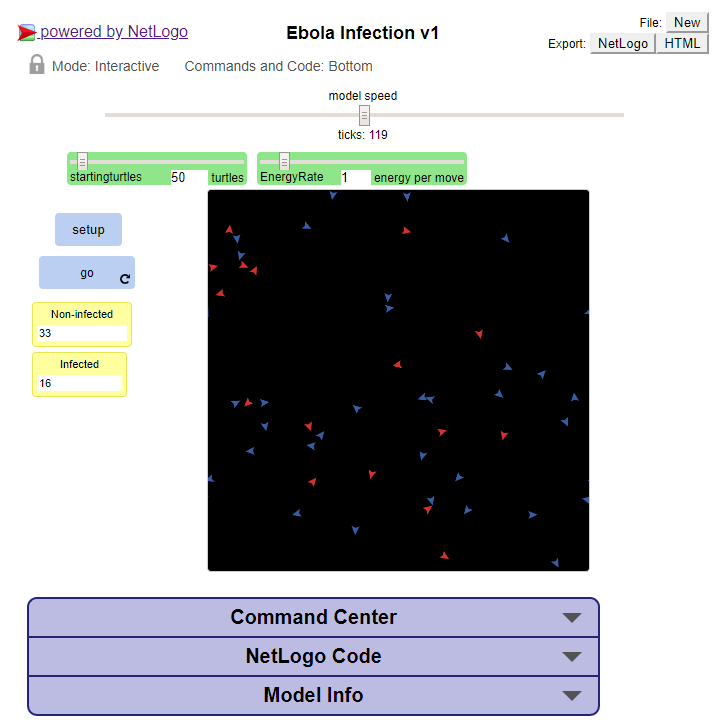

Portfolio

My First Scratch Game: Race 2 Space
In my first dip into computer science, I created a racing type game, where the goal is for the player to reach the end without colliding with obstacles. All of the levels are based on this core concept, albeit, with different flavors ranging from car to spaceship.
The MIT App Inventor Project
This application plays a game called "Elevators" which is similar to "Chutes & Ladders" or "Snakes & Ladders." This 4-player game simply has a die on the left to roll, and the colored pieces move accordingly.
The Briskly-Moving Dead
This text-based choose your own adventure game was my first full python script. In this game, the player tries to escape the zombie island as a human, or find a path to victory as a zombie by entering text inputs in response to each given prompt.

Password Generator
This fairly simple python script opens a window which allows the user to select what set of characters are used in the random generation of a password. The user may choose any combination of lowercase letters, uppercase letters, numbers, and symbols. The user is also allowed to input any length.
Image Distortion
This script takes the American Airlines Boeing image on the left and recolors and flips it.


GUI in Python
When this code is executed, it opens a new window called Riemann Sum Calculator. This does exactly what it says; it calculates the numerical value for a riemann sum based on several user inputs.
Analyzing Data with Python
This code outputs a graph of the growth since 1950 of the US and China.
Coding in NetLogo
This simulation that we made starts with a certain amount of turtles, and every time an infected red turtle occupies the same space as a blue turtle, the blue turtle becomes infected. Click on the image to open and play for yourself.
